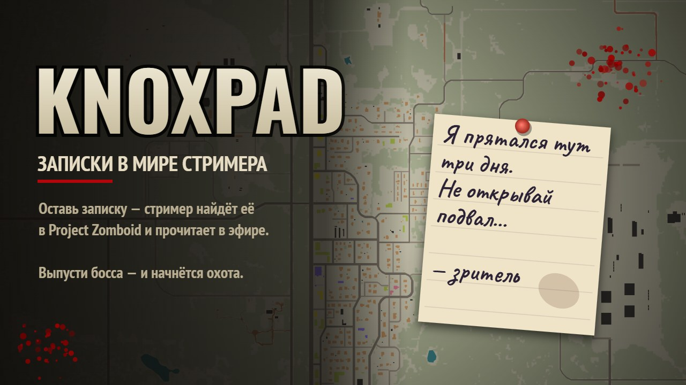
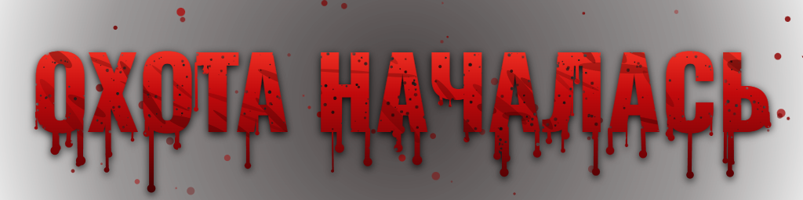

Записки бесплатные. Мат, оскорбления и ссылки модератор не пропустит.

Твой ник станет именем босса. Огромный зомби со свитой появится в сотне метров от стримера и пойдёт по следу.
В сообщении к донату напиши боевой клич — его увидят на стриме. Босса выпускает стример кнопкой.
Ник Twitch подтверждён входом в Twitch: если кто-то впишет твой ник, он просто подарит тебе монеты.
До 25 букв и цифр, без ссылок.
Ненайденная записка со временем истлеет — бот скажет. Записки бесплатные; мат, оскорбления и ссылки не пройдут.